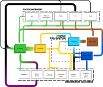

PhD · Université Grenoble Alpes
Agricultural Metabolism in France, 1852–2050
Quantitative Environmental History and Biophysical Analysis of Stakeholder Perspectives.
ISTerre · CIRED · defended on 12 November 2026
Question
How does the material structure of agricultural systems shape their performance, vulnerabilities, historical trajectories and possible futures?
Approach
Social metabolism, nitrogen and carbon accounting, network science, unsupervised learning and quantitative foresight.
E-GRAFS
An open model for agro-food flow accounting
E-GRAFS extends the GRAFS framework with a more disaggregated, modular and reproducible representation of agricultural systems.

PhD
Supervision
The PhD was defended on 12 November 2026 at Université Grenoble Alpes, following research at the Institute of Earth Sciences (ISTerre) and the International Research Center on Environment and Development (CIRED).
Thesis supervisor
Olivier Vidal
Co-supervisor